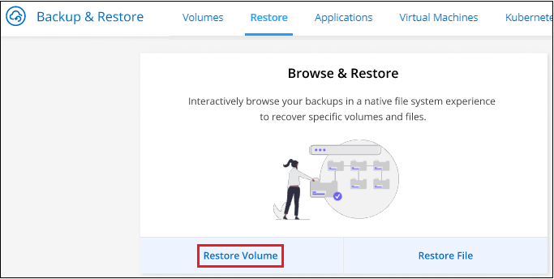
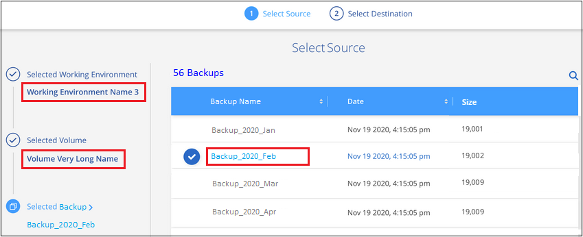

ドキュメントの変更をリクエスト
ドキュメントの変更をリクエスト GitHub で編集
GitHub で編集 寄稿者向けガイド
寄稿者向けガイドバックアップファイルからの ONTAP データのリストア
バックアップは、特定の時点のデータをリストアできるように、クラウドアカウントのオブジェクトストアに格納されます。ONTAP ボリューム全体をバックアップファイルからリストアすることも、一部のファイルのみをリストアする必要がある場合は、バックアップファイルから個々のファイルをリストアすることもできます。
元の作業環境、同じクラウドアカウントを使用している別の作業環境、またはオンプレミスの ONTAP システムに * ボリューム * を（新しいボリュームとして）リストアできます。
-
files * は、元の作業環境内のボリューム、同じクラウドアカウントを使用している別の作業環境内のボリューム、またはオンプレミスの ONTAP システム上のボリュームにリストアできます。
バックアップファイルから本番用システムにデータをリストアするには、有効なCloud Backupライセンスが必要です。
リストアダッシュボード
リストアダッシュボードを使用して、ボリュームとファイルのリストア処理を実行できます。リストアダッシュボードにアクセスするには、 Cloud Manager の上部にある * バックアップとリストア * をクリックし、 * リストア * タブをクリックします。をクリックすることもできます ボタン"] > * サービス・パネルからバックアップ / リストア・サービスのリストア・ダッシュボード * を表示します。

|
少なくとも 1 つの作業環境に対して Cloud Backup をアクティブ化しておく必要があります。また、初期バックアップファイルが存在する必要があります。 |
 には '[ 参照とリストア ] または [ 検索とリストア ] 機能を使用するためのオプションが表示されます"]
には '[ 参照とリストア ] または [ 検索とリストア ] 機能を使用するためのオプションが表示されます"]
ご覧のように、リストアダッシュボードでは、 * 参照と復元 * と * 検索と復元 * の 2 つの異なる方法でバックアップファイルからデータを復元できます。
参照と復元と検索と復元を比較します
一般的に、 Browse &Restore_ は、特定のボリュームまたはファイルを過去 1 週間または 1 か月からリストアする必要がある場合に適しています。また、ファイルの名前と場所、およびファイルが最後に正常に作成された日付を把握している必要があります。_ 検索と復元 _ は、通常、ボリュームまたはファイルを復元する必要があるときに適していますが、正確な名前、保存されているボリューム、または最後に良好な状態になった日付は覚えていません。
この表は、 2 つの方法の比較を示しています。
| 参照と復元 | 検索とリストア |
|---|---|
フォルダ形式の構造を参照して、 1 つのバックアップファイル内のボリュームまたはファイルを検索します |
ボリューム名またはフルボリューム名、部分的またはフルファイル名、サイズ範囲、および追加の検索フィルタを指定して、すべてのバックアップファイル * 全体でボリュームまたはファイルを検索します |
ボリュームリストアは、 Amazon S3 、 Azure Blob 、 Google Cloud 、 NetApp StorageGRID に格納されたバックアップファイルと連携します。ファイルのリストアは、 Amazon S3 と Azure Blob に格納されたバックアップファイルと連携します |
ボリュームとファイルのリストアは、Amazon S3とGoogle Cloudに格納されたバックアップファイルと連携します |
では、名前が変更されたファイルや削除されたファイルは処理されません |
新しく作成 / 削除 / 名前変更されたディレクトリと新しく作成 / 削除 / 名前変更されたファイルを処理します |
パブリッククラウドとプライベートクラウドの結果を参照できます |
パブリッククラウドとローカル Snapshot コピーの結果を参照できます |
ファイルのリストアには、 Cloud Restore インスタンスが別途必要です |
Cloud Restore インスタンスは不要です |
クラウドプロバイダのリソースを追加する必要はありません |
アカウントごとにバケットとAWSまたはGoogleのリソースを追加する必要があります |
個々のファイルのバックアップを参照するときに、 Cloud Restore インスタンスに関連するコスト |
バックアップとボリュームをスキャンして検索結果を表示するときに、AWSまたはGoogleのリソースにかかるコスト |
いずれかのリストア方式を使用する前に、固有のリソース要件に対応するように環境を設定しておく必要があります。これらの要件については、以降のセクションで説明します。
使用するリストア処理のタイプに応じた要件とリストア手順を確認します。
参照と復元を使用した ONTAP データの復元
ボリュームまたはファイルのリストアを開始する前に、リストアするボリュームまたはファイルの名前、ボリュームが存在する作業環境の名前、およびリストア元のバックアップファイルのおおよその日付を確認しておく必要があります。
-
注：リストアするボリュームのバックアップファイルがアーカイブストレージ（ ONTAP 9.10.1 以降の AWS および Azure で利用可能）にある場合、リストア処理にはより長い時間がかかり、コストが発生します。また、デスティネーションクラスタで ONTAP 9.10.1 以降が実行されている必要があります。
サポートされている作業環境とオブジェクトストレージプロバイダの参照とリストア
ONTAP バックアップファイルから次の作業環境にボリュームまたは個々のファイルをリストアできます。
| バックアップファイルの場所 | デスティネーションの作業環境 | |
|---|---|---|
* ボリュームの復元 * |
* ファイルの復元 * |
|
Amazon S3 |
オンプレミスの AWS ONTAP システムに Cloud Volumes ONTAP が導入されている |
オンプレミスの AWS ONTAP システムに Cloud Volumes ONTAP が導入されている |
Azure Blob の略 |
オンプレミスの Azure ONTAP システムに Cloud Volumes ONTAP を導入 |
オンプレミスの Azure ONTAP システムに Cloud Volumes ONTAP を導入 |
Google クラウドストレージ |
Google オンプレミス ONTAP システムの Cloud Volumes ONTAP |
|
NetApp StorageGRID |
オンプレミスの ONTAP システム |
|
「オンプレミス ONTAP システム」とは、 FAS 、 AFF 、 ONTAP Select の各システムを指します。
|
|
バックアップファイルがアーカイブストレージにある場合は、ボリュームリストアのみがサポートされます。Browse & Restore の使用時に、アーカイブストレージからのファイルのリストアは現在サポートされていません。 |
Browse & Restore を使用してボリュームをリストアする
バックアップファイルからボリュームをリストアすると、 Cloud Backup はバックアップのデータを使用して _new_volume を作成します。データは、元の作業環境のボリューム、またはソースの作業環境と同じクラウドアカウントにある別の作業環境にリストアできます。オンプレミスの ONTAP システムにボリュームをリストアすることもできます。

この出力からわかるように、ボリュームリストアを実行するには、作業環境名、ボリューム名、バックアップファイルの日付を確認しておく必要があります。
次のビデオでは、ボリュームのリストア手順を簡単に紹介しています。
-
Backup & Restore * サービスを選択します。
-
[* Restore * （復元） ] タブをクリックすると、 [Restore Dashboard （復元ダッシュボード） ] が表示されます。
-
[Browse & Restore] セクションで、 [* Restore Volume] をクリックします。

-
[ ソースの選択 ] ページで ' リストアするボリュームのバックアップ・ファイルに移動しますリストア元の日付 / 時刻スタンプを含む * Working Environment * 、 * Volume * 、および * Backup * ファイルを選択します。

-
[* Continue （続行） ] をクリックします
-
[ リストア先の選択 ] ページで、ボリュームをリストアする * 作業環境 * を選択します。

-
オンプレミスの ONTAP システムを選択し、オブジェクトストレージへのクラスタ接続をまだ設定していない場合は、追加情報を入力するように求められます。
-
Amazon S3 からリストアする場合、デスティネーションボリュームを配置する ONTAP クラスタ内の IPspace を選択し、 ONTAP クラスタに S3 バケットへのアクセスを許可するために作成したユーザのアクセスキーとシークレットキーを入力します。 さらに、必要に応じて、セキュアなデータ転送を行うためのプライベート VPC エンドポイントを選択できます。
-
Azure Blob からリストアする場合は、デスティネーションボリュームを配置する ONTAP クラスタ内の IPspace を選択し、オブジェクトストレージにアクセスする Azure サブスクリプションを選択します。また、 VNet とサブネットを選択して、データ転送を安全に行うプライベートエンドポイントを選択することもできます。
-
Google Cloud Storage からリストアする場合は、オブジェクトストレージ、バックアップが格納されているリージョン、およびデスティネーションボリュームが配置される ONTAP クラスタ内の IPspace にアクセスするために、 Google Cloud Project とアクセスキーとシークレットキーを選択します。
-
StorageGRID からリストアする場合は、オブジェクトストレージへのアクセスに必要なアクセスキーとシークレットキー、およびデスティネーションボリュームを配置する ONTAP クラスタの IPspace を選択します。
-
-
リストアしたボリュームに使用する名前を入力し、ボリュームを配置する Storage VM を選択します。デフォルトでは、 * <source_volume_name> _ Restore * がボリューム名として使用されます。

ボリュームの容量に使用するアグリゲートは、オンプレミスの ONTAP システムにボリュームをリストアする場合にのみ選択できます。
また、（ ONTAP 9.10.1 以降で使用可能な）アーカイブストレージ階層にあるバックアップファイルからボリュームをリストアする場合は、リストア優先度を選択できます。
-
リストアの進行状況を確認できるように、 * リストア * をクリックするとリストアダッシュボードに戻ります。
Cloud Backup は、選択したバックアップに基づいて新しいボリュームを作成します。可能です "この新しいボリュームのバックアップ設定を管理します" 必要に応じて。
アーカイブストレージにあるバックアップファイルからボリュームをリストアする場合は、アーカイブ階層とリストアの優先順位によって数分から数時間かかることがあります。[ * ジョブ・モニタ * ] タブをクリックすると、リストアの進行状況を確認できます。
参照と復元を使用した ONTAP ファイルの復元
ONTAP のバックアップから数ファイルしかリストアしない場合は、ボリューム全体をリストアするのではなく、ファイルを個別にリストアすることもできます。ファイルは元の作業環境の既存のボリューム、または同じクラウドアカウントを使用している別の作業環境にリストアできます。オンプレミスの ONTAP システム上のボリュームにファイルをリストアすることもできます。
複数のファイルを選択した場合は、選択したデスティネーションボリュームにすべてのファイルがリストアされます。したがって、ファイルを別のボリュームにリストアする場合は、リストアプロセスを複数回実行する必要があります。

|
バックアップファイルがアーカイブストレージにある場合、個々のファイルをリストアすることはできません。この場合、アーカイブされていない新しいバックアップファイルからファイルをリストアしたり、アーカイブされたバックアップからボリューム全体をリストアして必要なファイルにアクセスしたり、検索とリストアを使用してファイルをリストアしたりできます。 |
前提条件
-
ファイルリストア処理を実行するには、 Cloud Volumes ONTAP またはオンプレミスの ONTAP システムで ONTAP のバージョンが 9.6 以降である必要があります。
-
バックアップファイルから個々のファイルをリストアする場合は、別のリストアインスタンス / 仮想マシンを使用します。を参照してください "ファイルリストア処理用に導入されるインスタンスのタイプ" また、環境の準備が整っていることを確認します。
-
Amazon S3 のバックアップからファイルをリストアするには、 Cloud Manager に権限を付与するユーザロールに特定の AWS EC2 権限を追加する必要があります。また、特定のエンドポイントへのアウトバウンドインターネットアクセスを許可する必要があります。 "構成ファイルをリストアする準備ができていることを確認します"。
-
AWS のクロスアカウントリストアを実行するには、 AWS コンソールで手動の操作が必要です。AWS のトピックを参照してください "クロスアカウントバケットの権限を付与しています" を参照してください。
-
Azure Blob でのバックアップからファイルのリストアでは、特定のエンドポイントへのアウトバウンドインターネットアクセスが可能であることが必要です。 "構成ファイルをリストアする準備ができていることを確認します"。
ファイルのリストアプロセス
プロセスは次のようになります。
-
ボリュームバックアップから 1 つ以上のファイルを復元する場合は、 * リストア * タブをクリックし、 _ 参照 & 復元 _ の下の * ファイルの復元 * をクリックして、ファイル（またはファイル）が存在するバックアップファイルを選択します。
-
Restore インスタンスが起動し、選択したバックアップファイル内に存在するフォルダとファイルが表示されます。
-
注：リストアインスタンスは、ファイルを初めてリストアするときにクラウドプロバイダの環境に導入されます。
-
-
バックアップからリストアするファイル（複数可）を選択します。
-
ファイル（作業環境、ボリューム、およびフォルダ）をリストアする場所を選択し、 * リストア * をクリックします。
-
ファイルがリストアされ、非アクティブ状態が続くと Restore インスタンスがシャットダウンされてコストが削減されます。

このように、ファイルのリストアを実行するには、作業環境名、ボリューム名、バックアップファイルの日付、およびファイル名を把握しておく必要があります。
Browse & Restore を使用してファイルを復元します
ONTAP ボリュームのバックアップからボリュームにファイルをリストアするには、次の手順を実行します。ボリュームの名前と、ファイルのリストアに使用するバックアップファイルの日付を確認しておく必要があります。この機能では、ライブブラウズを使用して、各バックアップファイル内のディレクトリとファイルのリストを表示できます。
次のビデオでは、 1 つのファイルをリストアする手順を簡単に紹介します。
-
Backup & Restore * サービスを選択します。
-
[* Restore * （復元） ] タブをクリックすると、 [Restore Dashboard （復元ダッシュボード） ] が表示されます。
-
[ 参照と復元 ] セクションで、 [ ファイルの復元 *] をクリックします。
 ボタンを選択するスクリーンショット。"]
ボタンを選択するスクリーンショット。"] -
[ ソースの選択 ] ページで ' リストアするファイルを含むボリュームのバックアップ・ファイルに移動しますファイルのリストア元の日付 / タイムスタンプを持つ * 作業環境 * 、 * ボリューム * 、および * バックアップ * を選択します。

-
[* Continue （続行） ] をクリックすると、リストアインスタンスが開始されます。数分後に、ボリュームバックアップのフォルダとファイルのリストが表示されます。
-
注：リストアインスタンスは、ファイルを初めてリストアするときにクラウドプロバイダの環境に導入されるため、初回のリストアには数分かかることがあります。

-
-
_ ファイルの選択 _ ページで、復元するファイルを選択し、 * 続行 * をクリックします。ファイルの検索を支援するために、次の手順を実行します。
-
ファイル名が表示されている場合は、そのファイル名をクリックします。
-
検索アイコンをクリックしてファイル名を入力すると、そのファイルに直接移動できます。
-
を使用して、フォルダ内の下位レベルに移動できます ボタンをクリックして、ファイルを検索します。
ファイルを選択すると、ページの左側に追加され、選択済みのファイルが表示されます。必要に応じて、ファイル名の横にある * x * をクリックすると、このリストからファイルを削除できます。
-
-
保存先の選択ページで、ファイルを復元する * 作業環境 * を選択します。

オンプレミスクラスタを選択し、オブジェクトストレージへのクラスタ接続をまだ設定していない場合は、追加情報を入力するように求められます。
-
Amazon S3 からリストアする場合は、デスティネーションボリュームが配置されている ONTAP クラスタの IPspace と、オブジェクトストレージへのアクセスに必要な AWS Access Key および Secret Key を入力します。
-
Azure Blob からリストアする場合は、デスティネーションボリュームが配置されている ONTAP クラスタ内の IPspace を入力します。
-
-
次に、ファイルを復元する * Volume * と * Folder * を選択します。

ファイルを復元する場合は、いくつかのオプションがあります。
-
上の図のように、 [ ターゲットフォルダの選択 ] を選択した場合は、次のようになります。
-
任意のフォルダを選択できます。
-
フォルダにカーソルを合わせて、をクリックできます 行の末尾にあるサブフォルダをドリルダウンし、フォルダを選択します。
-
-
ソースファイルがある場所と同じ宛先作業環境とボリュームを選択した場合は、「ソースフォルダーパスを保持」を選択して、ソース構造内に存在していた同じフォルダーにファイルまたはすべてのファイルを復元できます。同じフォルダとサブフォルダがすべて存在している必要があります。フォルダは作成されません。
-
-
リストアの進行状況を確認できるように、 * リストア * をクリックするとリストアダッシュボードに戻ります。また、 * Job Monitor * タブをクリックしてリストアの進捗状況を確認することもできます。
リストア・インスタンスは、アクティブなときにのみコストが発生するように、一定の非アクティブ期間後にシャットダウンされます。
検索とリストアを使用した ONTAP データのリストア
検索とリストアを使用して、 ONTAP バックアップファイルからボリュームまたは個々のファイルをリストアできます。検索とリストアでは、クラウドストレージに保存されているすべてのバックアップから特定のプロバイダの特定のボリュームまたはファイルを検索して、リストアを実行できます。正確な作業環境名やボリューム名がわからなくても、検索ではすべてのボリュームのバックアップファイルが検索されます。
検索処理では、 ONTAP ボリュームに対応するすべてのローカル Snapshot コピーも検索されます。ローカル Snapshot コピーからデータをリストアする方が、バックアップファイルからリストアするよりも高速で低コストなので、 Snapshot からデータをリストアできます。スナップショットは、キャンバスのボリュームの詳細ページから新しいボリュームとして復元できます。
バックアップファイルからボリュームをリストアすると、 Cloud Backup はバックアップのデータを使用して _new_volume を作成します。データは、元の作業環境のボリュームとしてリストアすることも、ソースの作業環境と同じクラウドアカウントにある別の作業環境にリストアすることもできます。オンプレミスの ONTAP システムにボリュームをリストアすることもできます。
ファイルは、元のボリュームの場所、同じ作業環境内の別のボリューム、または同じクラウドアカウントを使用している別の作業環境にリストアできます。オンプレミスの ONTAP システム上のボリュームにファイルをリストアすることもできます。
リストアするボリュームのバックアップファイルがアーカイブストレージ（ ONTAP 9.10.1 以降の AWS で使用可能）にある場合、リストア処理にはより長い時間がかかり、追加コストが発生します。デスティネーションクラスタで ONTAP 9.10.1 以降が実行されている必要があり、そのファイルをアーカイブストレージからリストアすることは現在サポートされていません。
開始する前に、リストアするボリュームやファイルの名前や場所を把握しておく必要があります。
次のビデオでは、 1 つのファイルをリストアする手順を簡単に紹介します。
サポートされている作業環境とオブジェクトストレージプロバイダの検索とリストア
ONTAP バックアップファイルから次の作業環境にボリュームまたは個々のファイルをリストアできます。
| バックアップファイルの場所 | デスティネーションの作業環境 | |
|---|---|---|
* ボリュームの復元 * |
* ファイルの復元 * |
|
Amazon S3 |
オンプレミスの AWS ONTAP システムに Cloud Volumes ONTAP が導入されている |
オンプレミスの AWS ONTAP システムに Cloud Volumes ONTAP が導入されている |
Google クラウドストレージ |
Google オンプレミス ONTAP システムの Cloud Volumes ONTAP |
Google オンプレミス ONTAP システムの Cloud Volumes ONTAP |
「オンプレミス ONTAP システム」とは、 FAS 、 AFF 、 ONTAP Select の各システムを指します。
前提条件
-
クラスタの要件：
-
ONTAP のバージョンは 9.8 以降である必要があります。
-
ボリュームが配置されている Storage VM （ SVM ）に設定済みのデータ LIF が必要です。
-
ボリュームで NFS が有効になっている必要があります。
-
SVM で SnapDiff RPC サーバをアクティブ化する必要があります。作業環境でインデックスの作成を有効にすると、 Cloud Manager によって自動的にインデックス作成が実行されます。
-
-
AWS の要件：
-
Cloud Manager に権限を付与するユーザロールに、 Amazon Athena 、 AWS Glue 、および AWS S3 の特定の権限を追加する必要があります。 "すべての権限が正しく設定されていることを確認します"。
以前に設定したコネクタで Cloud Backup をすでに使用している場合は、ここで Athena 権限と Glue 権限を Cloud Manager ユーザロールに追加する必要があります。これらは新しい機能で、検索とリストアに必要です。
-
-
Google Cloudの要件：
-
特定のGoogle BigQuery権限は、Cloud Managerに権限を付与するユーザーロールに追加する必要があります。 "すべての権限が正しく設定されていることを確認します"。
以前に設定したコネクタでCloud Backupをすでに使用している場合は、ここでBigQuery権限をCloud Managerユーザロールに追加する必要があります。これらは新しい機能で、検索とリストアに必要です。
-
検索とリストアのプロセス
プロセスは次のようになります。
-
検索とリストアを使用する前に、ボリュームまたはファイルをリストアする各ソース作業環境でインデックス作成を有効にする必要があります。これにより、 Indexed Catalog は、すべてのボリュームのバックアップファイルを追跡できます。
-
ボリュームバックアップからボリュームまたはファイルを復元する場合は、 _ 検索と復元 _ で * 検索と復元 * をクリックします。
-
ボリューム名またはファイルの一部または全体の名前、ファイル名の一部または全部、サイズの範囲、作成日の範囲、その他の検索フィルタを入力し、 * 検索 * をクリックします。
検索結果ページには、検索条件に一致するファイルまたはボリュームを含むすべての場所が表示されます。
-
ボリュームまたはファイルの復元に使用する場所の * すべてのバックアップの表示 * をクリックし、実際に使用するバックアップファイルの * 復元 * をクリックします。
-
ボリュームまたはファイルをリストアする場所を選択し、 * リストア * をクリックします。
-
ボリュームまたはファイルがリストアされます。

ご覧のように、必要なのはボリュームやファイルの一部だけです。 Cloud Backup では、検索条件に一致するすべてのバックアップファイルが検索されます。
各作業環境のインデックスカタログを有効にする
検索とリストアを使用する前に、ボリュームまたはファイルのリストア元となる各ソース作業環境でインデックス作成を有効にする必要があります。これにより、インデックスカタログですべてのボリュームとすべてのバックアップファイルを追跡できるため、検索をすばやく効率的に実行できます。
この機能を有効にすると、ボリュームに対してCloud BackupがSVMでSnapDiff v3を有効にし、次の処理を実行します。
-
AWSに格納されたバックアップについては、新しいS3バケットとがプロビジョニングされます "Amazon Athena インタラクティブクエリーサービス" および "AWS グルーサーバレスデータ統合サービス"。
-
Google Cloudに保存されているバックアップの場合、新しいバケットとがプロビジョニングされます "Google Cloud BigQueryサービス" アカウント/プロジェクトレベルでプロビジョニングされます。作業環境でインデックス作成がすでに有効になっている場合は ' 次のセクションに進んでデータをリストアしてください
作業環境でインデックス作成を有効にするには：
-
作業環境にインデックスが作成されていない場合は、リストアダッシュボードの Search&Restore で * 作業環境でインデックス作成を有効にする * をクリックし、作業環境で * インデックス作成を有効にする * をクリックします。
-
少なくとも 1 つの作業環境にインデックスが作成されている場合は、リストアダッシュボードの Search & Restore で、 * インデックス設定 * をクリックし、作業環境で * インデックス作成を有効にする * をクリックします。
すべてのサービスがプロビジョニングされ、インデックスカタログがアクティブ化されると、作業環境は「アクティブ」と表示されます。
作業環境内のボリュームのサイズとクラウド内のバックアップファイルの数によっては、最初のインデックス作成プロセスに最大 1 時間かかることがあります。その後は、 1 時間ごとに差分変更を反映して透過的に更新され、最新の状態が維持されます。
検索とリストアを使用したボリュームとファイルのリストア
お先にどうぞ 作業環境のインデックス作成を有効にしましたでは、検索とリストアを使用してボリュームまたはファイルをリストアできます。これにより、幅広いフィルタを使用して、すべてのバックアップファイルからリストアするファイルまたはボリュームを検索できます。
-
Backup & Restore * サービスを選択します。
-
[* Restore * （復元） ] タブをクリックすると、 [Restore Dashboard （復元ダッシュボード） ] が表示されます。
-
[ 検索と復元 ] セクションで、 [ * 検索と復元 * ] をクリックします。
 ボタンを選択するスクリーンショット。"]
ボタンを選択するスクリーンショット。"] -
[ 検索と復元 ] ページで、次の操作を行います。
-
検索バーに、ボリューム名またはファイル名の全体または一部を入力します。
-
[ フィルタ（ Filter ） ] 領域で、フィルタ条件を選択する。たとえば、データが存在する作業環境を選択し、 .doc ファイルなどのファイルタイプを選択できます。
-
-
[* 検索（ * Search ） ] をクリックすると、 [ 検索結果（ Search Results ） ] 領域に、検索に一致するファイルまたはボリュームを持つすべての場所が表示されます。
 ページに表示されます"]
ページに表示されます"] -
復元するデータが格納されている場所の * すべてのバックアップの表示 * をクリックして、そのボリュームまたはファイルが含まれているすべてのバックアップファイルを表示します。

-
クラウドからボリュームまたはファイルを復元するために使用するバックアップファイルに対して、 * 復元 * をクリックします。
検索結果からは、検索結果にファイルが含まれているローカルボリュームの Snapshot コピーも特定されます。この時点では、スナップショットに対して * リストア * ボタンは機能しませんが、バックアップファイルではなく Snapshot コピーからデータをリストアする場合は、ボリュームの名前と場所を書き留め、キャンバスのボリュームの詳細ページを開きます。 および * Restore from Snapshot copy * オプションを使用します。
-
ボリュームまたはファイルをリストアする場所を選択し、 * リストア * をクリックします。
-
ファイルの場合は、元の場所にリストアするか、別の場所を選択できます
-
ボリュームの場所は選択できます。
-
ボリュームまたはファイルがリストアされ、リストアダッシュボードに戻ります。これにより、リストア処理の進捗状況を確認できます。また、 * Job Monitor * タブをクリックしてリストアの進捗状況を確認することもできます。
リストアしたボリュームに対しては、を実行できます "この新しいボリュームのバックアップ設定を管理します" 必要に応じて。